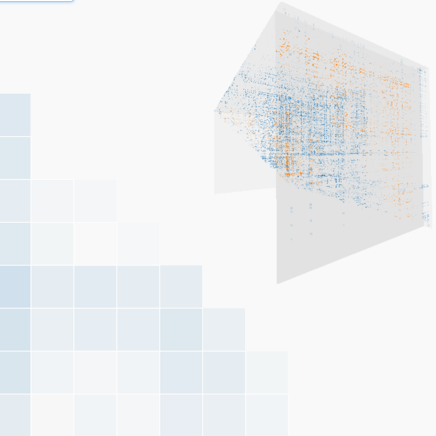

Journal Paper Paul Klemm, Kai Lawonn, Sylvia Glaßer, Uli Niemann, Katrin Hegenscheid, Henry Völzke, Bernhard Preim.
IEEE Transactions on Visualization and Computer Graphics (TVCG),
in print, 2015.
I relate mammography scan results to breast cancer in an angular/d3-based web app.
A 3D heatmap overview visualization allows epidemiologists to extract variables correlating with cancer or other target conditions.
Paul Klemm, Sylvia Glaßer, Kai Lawonn, Marko Rak, Henry Völzke, Katrin Hegenscheid, Bernhard Preim
Proc. of the 6th International Conference on Information Visualization Theory and Applications (IVAPP),
pp. 85-92, 2015
Using R and Matlab, I correlate the shape of the lower spine with back pain.
A quality plot of decision trees allows experts to assess the predictive power of the shape features towards target conditions.